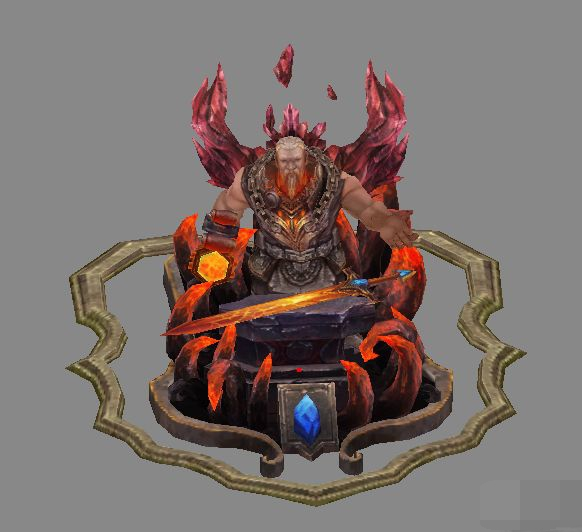
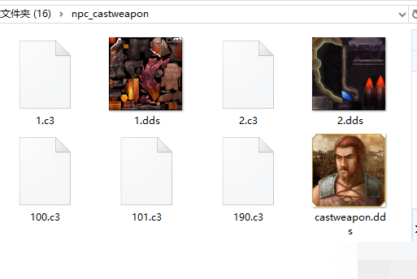
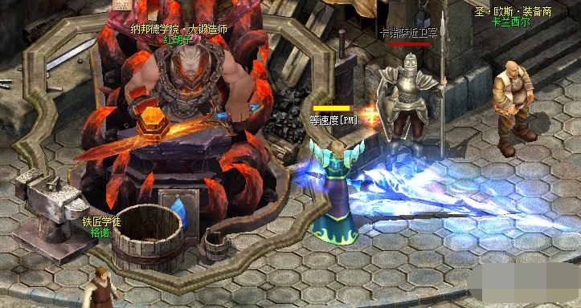

我们先找一个npc的模型文件，新建一个文件夹npc_castweapon为了方便我们把把模型、贴图、以及头像全部放到这个文件夹里面。全部弄好以后，我们把这个文件夹放到客户端c3/npc里面，因为这里主要存放的是游戏的npc，方便我们以后更改查找。

然后我们来配置npc的头像 头像配置在客户端ani/NpcFace.ANI中
1.[Face999]
2.;999这个id就是以后我们数据库需要调用的id
3.FrameAmount=1
4.;资源数，目前不支持
5.Frame0=c3/npc/npc_castweapon/castweapon.dds
6.;后面这些是资源路径然后我们来配置npc的模型以及动作
主要有以下文件控制
3dmotion.ini
3dobj.ini
3DSimpleObj.ini
3dTexture.ini
armor.ini
npc.ini
3dobj.ini
配置模型
12345100=c3/npc/npc_castweapon/1.C3
12345101=c3/npc/npc_castweapon/2.C3
3dTexture.ini
配种模型贴图
12345100=c3/npc/npc_castweapon/1.dds
12345101=c3/npc/npc_castweapon/2.dds
3DSimpleObj.ini
这里也就是定义683模型的c3文件和dds文件
后面的armor.ini和这里一个意思
[ObjIDType683]
PartAmount=2
Part0=12345100
Texture0=12345100
Part1=12345101
Texture1=12345101
由于这个模型是两部分组成，所以这里要写PartAmount=2，表明由两部分
armor.ini
这个同3DSimpleObj.ini差不多的意思照着写就可以了
[683000000]
Part=2
Mesh0=12345100
Texture0=12345100
MixTex0=0
MixOpt0=0
Asb0=5
Adb0=6
Material0=default
Mesh1=12345101
Texture1=12345101
MixTex1=0
MixOpt1=0
Asb1=5
Adb1=6
Material1=default
npc.ini
这里就是游戏中的npc属性了
[NpcType9105]
Name=红胡子
SimpleObjID=683
StandByMotion=0683000100
BlazeMotion=0683000190
BlazeMotion1=0683000190
BlazeMotion2=0683000190
RestMotion=0683000101
Effect=springred
ZoomPercent=100
Note=纳邦德学院·大锻造师
有很多小伙伴不知道这里都是什么意思，我这里简单说一下
[NpcType9105]
；这里的9105就是我们后面数据库lookface调用的模型，末尾还要加上方位例如91050 为正前【方位为8个也就是0-7】
Name=npc的名字
SimpleObjID=npc的模型
StandByMotion=正常动作
BlazeMotion=点燃动作
BlazeMotion1=点燃动作1
BlazeMotion2=点燃动作2
RestMotion=复位动作
Effect=光效
ZoomPercent=缩放比例
Note=npc备注名称
全部完成后，我们在数据库里面也要加一个，在数据库中有两个表，一种为动态npc也就是可以随时在游戏中删除的活动npc，一种为固定npc也就是游戏中重要的npc。
INSERT INTO `top1`.`cq_npc` (`id`, `ownerid`, `playerid`, `name`, `type`, `lookface`, `length`, `fat`, `idxserver`, `mapid`, `cellx`, `celly`, `task0`, `task1`, `task2`, `task3`, `task4`, `task5`, `task6`, `task7`, `data0`, `data1`, `data2`, `data3`, `datastr`, `linkid`, `life`, `maxlife`, `base`, `sort`, `itemid`, `size_front`, `size_back`, `size_left`, `size_right`) VALUES ('1054', '0', '0', '红胡子', '0001', '91050', '0', '0', '-1', '1000', '0255', '0406', '4709050', '0000', '0000', '0000', '0000', '0000', '0000', '0000', '0', '0', '0', '0', '无', '0000', '00', '00', '0000', '01', '0000', '0000', '0000', '0000', '0000');看一下效果
